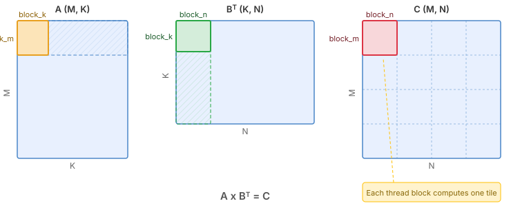
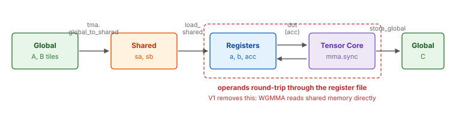
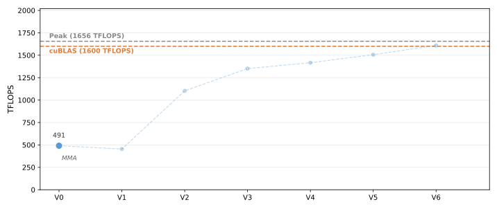

0. A Minimal Hopper Matmul¶
This first version implements a minimal but correct matrix multiplication kernel on Hopper GPUs. It introduces two key Hopper features: TMA (Tensor Memory Access, tma) for bulk data movement, and asynchronous barriers (mbarrier) for tracking when that movement completes.
The tensor cores are still driven the Ampere way — operands are staged into
registers and multiplied with the classic mma.sync instruction. That is the
piece we replace in V1. The kernel is not yet fast, but it establishes the
foundation for everything that follows.
The Full Kernel¶
Before diving into the details, here is the complete kernel so you can see the big picture. We will explain each part in the sections that follow.
Hint
To view the generated CUDA source code, check the cache directory. See Cache for details.
@tilus.autotune(
"block_m, block_n", [(64, 128), (128, 128), (128, 256), (256, 128), (256, 256)]
)
@tilus.autotune("block_k", [16, 32, 64])
class MatmulTMA(tilus.Script):
def __init__(
self,
block_m,
block_n,
block_k,
):
super().__init__()
self.block_m = block_m
self.block_n = block_n
self.block_k = block_k
def __call__(
self,
m_size: int32,
n_size: int,
k_size: int,
a_ptr: ~float16,
b_ptr: ~float16,
c_ptr: ~float16,
):
self.attrs.blocks = [
cdiv(m_size, self.block_m),
cdiv(n_size, self.block_n),
]
self.attrs.warps = 4
block_m, block_n, block_k = self.block_m, self.block_n, self.block_k
offset_m: int32 = block_m * self.blockIdx.x
offset_n: int32 = block_n * self.blockIdx.y
ga = self.global_view(a_ptr, dtype=float16, shape=[m_size, k_size])
gb = self.global_view(b_ptr, dtype=float16, shape=[n_size, k_size])
sa = self.shared_tensor(dtype=float16, shape=[block_m, block_k])
sb = self.shared_tensor(dtype=float16, shape=[block_n, block_k])
acc = self.register_tensor(dtype=float32, shape=[block_m, block_n], init=0.0)
tma_barrier = self.mbarrier.alloc(counts=[1])
phase: uint32 = 0
for offset_k in range(0, k_size, block_k):
# issue asynchronous copy instructions to load tiles of A and B
with self.single_thread():
self.mbarrier.arrive_and_expect_tx(
tma_barrier, transaction_bytes=sa.nbytes + sb.nbytes
)
self.tma.global_to_shared(
src=ga, dst=sa, offsets=[offset_m, offset_k], mbarrier=tma_barrier
)
self.tma.global_to_shared(
src=gb, dst=sb, offsets=[offset_n, offset_k], mbarrier=tma_barrier
)
self.mbarrier.wait(tma_barrier, phase=phase)
# synchronize threads in the block to ensure data is available in shared memory
self.sync()
a = self.load_shared(sa)
b = self.load_shared(sb)
self.dot(a, b.transpose(), acc, out=acc)
self.sync()
phase ^= 1
# sa/sb are deliberately not freed. The epilogue allocates no shared
# memory, so freeing reclaims nothing -- but it would return those slots
# to the allocator's free list, and the mbarrier allocator (which runs
# after the whole function is emitted) would then be free to place the
# barriers inside a buffer the TMA engine writes throughout the loop
# above, silently corrupting the barrier state.
casted_acc = self.cast(acc, dtype=float16)
gc = self.global_view(c_ptr, dtype=float16, shape=[m_size, n_size])
self.store_global(gc, casted_acc, offsets=[offset_m, offset_n])
Block Tiling¶
We compute \(C = A \times B^T\) where A is (M, K) and B is (N, K). The output matrix C is (M, N).
Each thread block is responsible for computing one block_m x block_n tile of
C. The K dimension is iterated in chunks of block_k.
{kind=link}

Block tiling of the matmul. Each thread block computes one output tile. The hatched regions show the full slices of A and BT that participate in computing the highlighted C tile.¶
Note
Data layout: K-major. Hopper tensor cores expect operands in shared memory
with K contiguous (or MN-contiguous). This tutorial uses K-major throughout, so
A is [M, K] and B is [N, K]. The MMA expects logical shapes [M, K]
and [K, N], which is why we call b.transpose() — a view operation
that reinterprets the layout without moving data.
Data Flow¶
Triton also uses Hopper hardware features like TMA and WGMMA, but manages them automatically through compiler passes. Tilus opens the black box: you control memory placement, data movement, and synchronization directly, which is necessary for achieving peak performance. The kernel moves data through three memory levels:
{kind=link}

Data flow in the kernel: Global Memory → Shared Memory → Registers → Global Memory.¶
Global → Shared:
tma.global_to_shared()loads tiles of A and B from global memory into shared memory asynchronously, using the dedicated TMA hardware engine.Shared → Register:
load_shared()reads the staged tiles into per-thread registers, laid out to match what the tensor core MMA instruction expects.Register → Register:
dot()multiplies the two register tiles and accumulates into an fp32 register accumulator. This lowers to the classicmma.synctensor core instruction.Register → Global:
store_global()writes the final result back to global memory.
Note that steps 2 and 3 are where Hopper leaves performance behind: every operand element makes a round trip through the register file before reaching the tensor core. V1 removes that round trip entirely.
TMA: Tensor Memory Access¶
TMA is a hardware unit introduced on Hopper that asynchronously copies a
multi-dimensional tile between global and shared memory. Compared to the
Ampere-era cp.async path (where every thread issues its own 16-byte copy):
Fewer instructions: one TMA call replaces hundreds of per-thread copy instructions.
No thread occupation: the TMA engine operates independently; the issuing thread can proceed to other work.
Built-in address generation: TMA handles multi-dimensional indexing and shared-memory swizzling internally, so no registers are burned on address math.
In Tilus, TMA loads are issued via
tma.global_to_shared().
The instruction takes a global tensor src, a shared tensor dst,
offsets into the global tensor, and an mbarrier for completion tracking.
The tile shape and swizzle pattern are derived from the shared tensor, and Tilus
builds the required tensor map descriptor for you.
For more details, see Script.tma.
Asynchronous Barriers (mbarrier)¶
In Triton, synchronization is handled implicitly. On Hopper, many operations are asynchronous: the instruction returns immediately and the work completes in the background. This enables overlapping data movement with computation, but requires explicit tracking of when operations finish. This is the role of the mbarrier (memory barrier, see Script.mbarrier).

An mbarrier tracks pending arrivals and a phase bit.¶
An mbarrier is a 64-bit synchronization object in shared memory that tracks:
Pending arrivals: how many threads still need to signal they are done. Each
mbarrier.arrive()call decrements this count.Pending transactions (tx-count): how many bytes of asynchronous transfer are still outstanding.
Phase (1 bit): flips between 0 and 1 each time a phase completes.
A phase completes when both pending arrivals and tx-count reach zero. At that point, the hardware automatically flips the phase bit and resets the counters for the next phase.
Wait checks the phase:
mbarrier.wait(barrier, phase=p)
blocks until the barrier’s current phase differs from p. When the phase has
flipped, the tracked operations are guaranteed to have completed.
Why flip the phase? The same barrier is reused across loop iterations. The
phase bit distinguishes “this iteration completed” from “the previous iteration
completed.” After each wait, the caller flips its local phase variable
(phase ^= 1) so the next wait targets the new phase:
phase: uint32 = 0 # start expecting phase 0
for ...:
... # issue async work on the barrier
self.mbarrier.wait(barrier, phase=phase) # wait for current phase
phase ^= 1 # next iteration waits for the other phase
Tracking TMA Completion with tx-count¶
TMA loads are tracked through the mbarrier’s tx-count (transaction byte count) rather than through arrivals. The flow is:
A single thread calls
mbarrier.arrive_and_expect_tx()to declare how many bytes the upcoming TMA transfers will deliver. This both arrives at the barrier (decrementing pending arrivals) and increases the barrier’s tx-count.tma.global_to_shared()is issued. When the TMA engine completes a transfer, the hardware automatically decrements the barrier’s tx-count by the number of bytes delivered.mbarrier.wait()blocks until both pending arrivals and tx-count reach zero — meaning the declaration has been made and all TMA data has landed in shared memory.
Note
The transaction_bytes must exactly match the total bytes that will be
transferred by the subsequent TMA calls. In our case, that is
sa.nbytes + sb.nbytes, the combined size of the two shared tiles
(see SharedTensor.nbytes).
Thread Groups¶
By default, every instruction in a Tilus kernel operates on the entire thread
block: the __call__ body defines the behavior of all threads in the block
collectively. However, efficient matrix multiplication kernels on Hopper require
different warps to perform different jobs and collaborate with each other
asynchronously. To narrow the execution scope to a subset of threads, Tilus
provides thread groups.
A thread group selects a subset of threads within the block using
thread_group(). For example:
with self.thread_group(thread_begin=0, num_threads=32):
# Only threads 0-31 (one warp) execute this
...
with self.thread_group(thread_begin=32, num_threads=32):
# Only threads 32-63 execute this
...
Tilus also provides shortcuts for common patterns:
single_thread() for one thread,
single_warp() for one warp (32 threads), and
warp_group() for a full warp group (4 warps).
Note that Tilus does not expose threadIdx to the user. There is no way to
write if threadIdx.x < 32 in a Tilus program. Instead, use
thread_group() and its shortcuts to narrow the execution
scope.
Every Tilus instruction has a requirement on the thread group it can execute in.
Some instructions work in any thread group, while others require a single thread,
a single warp, or a warp group. V0 uses only the simplest case:
single_thread(), so that arrive_and_expect_tx counts one
arrival and one byte declaration instead of 128 of each:
with self.single_thread():
self.mbarrier.arrive_and_expect_tx(
tma_barrier, transaction_bytes=sa.nbytes + sb.nbytes
)
self.tma.global_to_shared(
src=ga, dst=sa, offsets=[offset_m, offset_k], mbarrier=tma_barrier
)
self.tma.global_to_shared(
src=gb, dst=sb, offsets=[offset_n, offset_k], mbarrier=tma_barrier
)
self.mbarrier.wait(tma_barrier, phase=phase)
For more details, see Thread Group.
Walkthrough¶
With the key Hopper features covered above (TMA, asynchronous barriers, and thread groups), let us now walk through the kernel code in detail.
A Tilus kernel is defined as a subclass of Script. The
__init__ method stores compile-time hyperparameters (tile sizes), and
__call__ describes the kernel logic. For more on the script structure, see
Tilus Script.
The @tilus.autotune decorators define a search space for compile-time
hyperparameters. Tilus benchmarks all combinations and picks the fastest
configuration automatically. For more on autotuning, see
Autotuning.
Kernel Setup¶
self.attrs.blocks = [
cdiv(m_size, self.block_m),
cdiv(n_size, self.block_n),
]
self.attrs.warps = 4
block_m, block_n, block_k = self.block_m, self.block_n, self.block_k
offset_m: int32 = block_m * self.blockIdx.x
offset_n: int32 = block_n * self.blockIdx.y
ga = self.global_view(a_ptr, dtype=float16, shape=[m_size, k_size])
gb = self.global_view(b_ptr, dtype=float16, shape=[n_size, k_size])
sa = self.shared_tensor(dtype=float16, shape=[block_m, block_k])
sb = self.shared_tensor(dtype=float16, shape=[block_n, block_k])
acc = self.register_tensor(dtype=float32, shape=[block_m, block_n], init=0.0)
tma_barrier = self.mbarrier.alloc(counts=[1])
phase: uint32 = 0
self.attrs.blockssets the grid dimensions:ceil(M / block_m) x ceil(N / block_n)thread blocks.self.attrs.warpssets the number of warps per block. Here we use 4 warps (128 threads) — one warp group, the granularity the Hopper tensor core will require from V1 onward.offset_mandoffset_nare the output tile offsets, computed from the block index (blockIdx).global_view()interprets the raw pointers as 2D global memory tensors with the given dtype and shape.shared_tensor()allocates shared memory tiles for staging A and B data.register_tensor()allocates the fp32 accumulator, distributed across the 128 threads of the block. A128 x 256fp32 accumulator costs 256 registers per thread — a real constraint on Hopper, since the accumulator lives in the same register file as everything else.mbarrier.alloc()allocates one mbarrier with an expected arrival count of 1, because exactly one thread will callarrive_and_expect_txon it each iteration.
Main Loop¶
for offset_k in range(0, k_size, block_k):
# issue asynchronous copy instructions to load tiles of A and B
with self.single_thread():
self.mbarrier.arrive_and_expect_tx(
tma_barrier, transaction_bytes=sa.nbytes + sb.nbytes
)
self.tma.global_to_shared(
src=ga, dst=sa, offsets=[offset_m, offset_k], mbarrier=tma_barrier
)
self.tma.global_to_shared(
src=gb, dst=sb, offsets=[offset_n, offset_k], mbarrier=tma_barrier
)
self.mbarrier.wait(tma_barrier, phase=phase)
# synchronize threads in the block to ensure data is available in shared memory
self.sync()
a = self.load_shared(sa)
b = self.load_shared(sb)
self.dot(a, b.transpose(), acc, out=acc)
self.sync()
phase ^= 1
In each iteration:
single_thread()narrows the scope so thatmbarrier.arrive_and_expect_tx()declares the expected bytes exactly once. The twotma.global_to_shared()calls then load the A and B tiles for this K-chunk, andmbarrier.wait()blocks until both have landed.sync()after thesingle_threadblock is what makes the data visible to the other 127 threads: only thread 0 executed the wait, so the remaining threads need a block-wide barrier before they may read shared memory. This lowers to__syncthreads().load_shared()reads the two shared tiles into register tensors, anddot()accumulatesacc += a @ b.transpose()on the tensor cores.The second
sync()guards the other direction: the next iteration’s TMA will overwritesaandsb, so every thread must be done reading them before thread 0 is allowed to issue the next load.phase ^= 1flips the local phase so the nextmbarrier.waittargets the new phase of the reused barrier.
Note how much of the loop is waiting. The TMA runs, then everyone waits; the MMA runs, then everyone waits again. Nothing overlaps. That is the theme of the next several versions.
Epilogue¶
casted_acc = self.cast(acc, dtype=float16)
gc = self.global_view(c_ptr, dtype=float16, shape=[m_size, n_size])
self.store_global(gc, casted_acc, offsets=[offset_m, offset_n])
After the loop, cast() converts the fp32 accumulator to fp16
and store_global() writes the result to global memory
directly from registers.
Note
You might expect a free_shared() on sa and sb
here, and the kernel deliberately does not have one. Nothing is allocated
after this point, so freeing would reclaim no shared memory — but it would
return those slots to the allocator’s free list. Barriers are placed after
the whole function has been emitted, at which point the allocator sees only
that static free list and not the fact that the TMA engine writes sa and
sb throughout the loop above. Placing an mbarrier inside a live TMA
destination corrupts the barrier’s state, and the failure is a subtle one:
the kernel still runs, still produces mostly-correct output, and drops NaNs
into a fraction of a percent of the result on some launches and not others.
Running the Kernel¶
MatmulTMA() creates a kernel template. Compilation happens on the first call.
Note the two different integer annotations in the function signature:
int32(e.g.,m_size: int32): a runtime parameter. The value is passed to the GPU kernel as an argument and can change between calls without recompilation.int(e.g.,n_size: int,k_size: int): a compile-time constant. The value is baked into the generated CUDA code, so a new value triggers JIT recompilation and autotuning.
Making n_size and k_size compile-time constants allows the compiler to
specialize the kernel (e.g., unroll loops, compute constant addresses). For more
details, see Tilus Script.
Once compiled, subsequent calls with the same compile-time values dispatch directly to the GPU.
def main():
headers = ["m", "n", "k", "name", "latency (ms)", "tflops"]
workloads = [
[4096, 4096, 4096],
]
rows = []
for m, n, k in workloads:
matmul = MatmulTMA()
a = (torch.rand(m, k, dtype=torch.float16).cuda() - 0.5) / math.sqrt(k)
b = (torch.rand(n, k, dtype=torch.float16).cuda() - 0.5) / math.sqrt(k)
c_actual = torch.empty(m, n, dtype=torch.float16).cuda()
c_expect = a @ b.T
matmul(m, n, k, a, b, c_actual)
torch.cuda.synchronize()
# check correctness
torch.testing.assert_close(c_expect, c_actual)
# benchmark
for name, func in [
("torch", lambda: torch.matmul(a, b.T, out=c_expect)),
("tilus", lambda: matmul(m, n, k, a, b, c_actual)),
]:
latency = benchmark_func(func, warmup=5, repeat=20)
tflops = 2 * m * n * k / latency * 1e-9
rows.append([m, n, k, name, latency, tflops])
df = pandas.DataFrame(rows, columns=headers)
print(df)
Performance¶
This minimal kernel reaches 305 TFLOPS (3.60 ms), about 41% of cuBLAS. The
autotuner settles on a small 64 x 128 tile with block_k=64. Only 5 of the
15 candidates in the search space compile at all: a 128 x 256 fp32
accumulator needs 256 registers per thread on its own, past the 255-register
limit, and the operand fragments mma.sync requires have to fit alongside it.
Nsight Compute reports only 59% tensor pipe utilization — the tensor cores
spend most of their time waiting on the shared-to-register traffic feeding them.
The complete source is at examples/hopper_matmul/matmul_v0.py.

Hopper matmul performance on H100 SXM (M=N=K=8192, fp16). Latency is CUDA-event timed, median of three fresh processes. Peak is the published dense FP16 tensor core throughput of the H100 SXM.¶
What’s Next¶
This kernel works but is far from optimal. The main bottleneck is the
MMA path: dot() lowers to mma.sync, which requires
every operand fragment to be loaded from shared memory into registers first.
That costs instructions, register file bandwidth, and registers — all of which
compete with the accumulator that already dominates the register budget.
In the next version, we replace it with WGMMA (warp-group MMA),
Hopper’s asynchronous tensor core instruction. WGMMA reads its operands
directly from shared memory via a descriptor, so the load_shared step
disappears completely, and a single instruction issued by one warp group covers a
much larger tile.